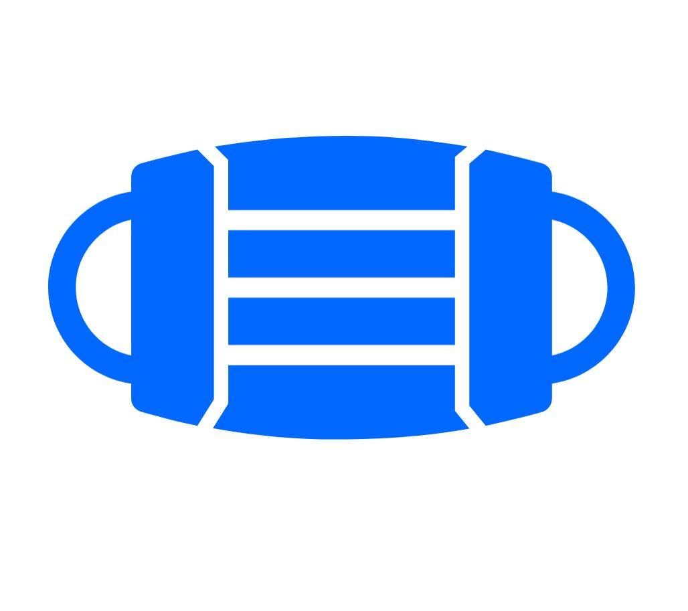
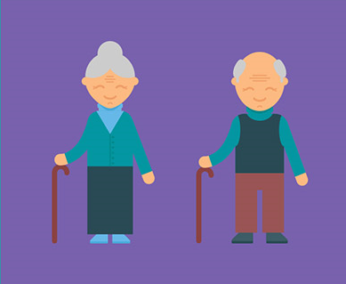

I strongly believe that it is important to give back to the community and help out wherever possible. My past experience is listed below. As someone that is active in the development scene at TAMU I have thought of some additional ways I could help out in future. I would like to implement a community / service track for hackers. By awarding projects built to tackle societal issues such as poverty, food security, and more I think I could help bring about a positive impact.

Provide Our Heroes is a non profit that emerged during the COVID-19 pandemic. The organization 3d prints personal protective equipment and ships it all over the country to frontline workers in need. I volunteered as an order logistics organizer and as such by job included notifying frontline workers requesting PPE of their order status and delivery dates as part of our mission. The website can be accessed here.

As an undergraduate student researcher I am building a model that will identify when people have fallen and need medical assistance. This would be primary aimed at the elderly in need of care at old age homes. This could also be implemented in public to identify people that have collapsed due to heat stroke or syncope. I will be training this model using available datasets and hope to one day implement this in real life so as to help those when needed.
As a participant at a hackathon this summer I built an app that enables users to identify medical conslutants around them. This was done to provide an alternative to visitng a congested hospital. The github repo can be found here.